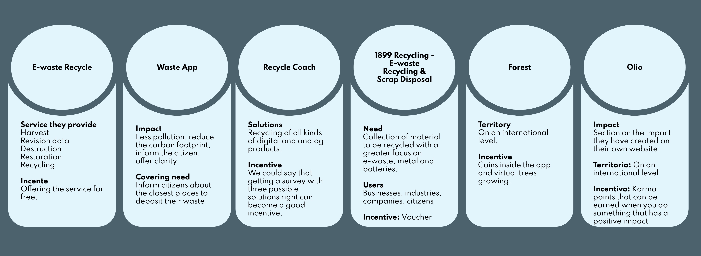

UX Research • E-waste Solution
- Duration: 3 months
- Role: My role in this project was as an UX researcher.
- The Problem: Bla bla bla
- The assignment: Bla bla bla
- Responsabilities: Bla bla bla
- Pain Point:
- Bla bla bla
- Bla bla bla
- Bla bla bla
- Bla bla bla
- Bla bla bla
This project is a work of discovery and research in the field of sustainability with a focus on the environmental impact of electrical and electronic waste in the daily life of human beings.
Research Question
“What can we do at the citizen level to act on the life cycle of electronic products from a holistic perspective that takes into account the three R's: Reduce, Reuse and Recycle?”
Research Objectives
Bla bla bla
- What new life do users usually give to obsolete products?
- What does the user need to know to be able to recycle?
- Where and how do users recycle their ewaste? If it is through a recycling center, how to offer the location of the recycling centers?
- Does the user know the consequences of recycling or not doing it?
- What redesign projects can we offer to motivate people to reuse?
- How to buy sustainably? What is sustainable consumption?
- What information does the user need in order not to produce e-waste?
- At what point in the life of the product must information on recycling be provided?
- How do we connect users who donate with users who receive donations?
- What type of service or platform does the user need to solve their needs?
Desk Research
Desk research, also called secondary research is about reviewing previous research findings to make an idea about the field before digging in. Here are some insights:
- First European regulation: Directive 2002/96/CE of the European Parliament and of the Council of January 27, 2003, says that governments take appropriate measures to minimize the disposal of waste electrical and electronic equipment (WEEE) as unsorted municipal waste and achieve a high degree of separate collection of WEEE.
- Report: The Global E-waste Monitor 2020 Report: In 2019, the world generated a staggering 53.6 tonnes of e-waste, an average of 7.3kg per capita.
- Book: Made to Throw Away - The Irrationality of Planned Obsolescence says that "[...] if we are able to give up an excess of material comfort, that represents a liberation of creativity, a rebirth of good coexistence and the possibility of leading a decent life"
- Article Bitcoint’s growing e-waste problem from the magazine “Resources, Conservation and Recycling”: the lifetime of a bitcoin mining device is less than 1.29 years. Based on this data, the creators of the article calculated the amount of electronic waste per bitcoin, reaching a result of 272g per transaction, which is equivalent to 112.5 million in 2020.
Competitive Audit
UX benchmarking is an effective method for understanding how people use and think about an interface, whether it’s for a website, software, or mobile app. For this e-waste project, I was looking for some direct and indirect competitors and I analyzed the most significant services they offer to understand the actual market.
User Definition - 2x2 diagram
This research method helps us divide our target audience based on our accessibility to them and the insights they would provide us.
Screeener
A screener is a questionnaire that helps researchers identify the right people—those who have the attributes and qualities needed for a specific study. For this project, I prepared a three questions questionnaire that was the filter for the user's interviews. This way I make sure I was focusing on the real users.
1. Users have an age of:
- Less than 18 years - rejected
- Between 20-40 years - accepted
- Between 40-65 years - accepted
- Over 65 years - rejected
2. How often do you usually buy technological and electronic products (Understanding by these products both small devices such as iPhone, digital watches, etc. and large devices: refrigerators, televisions, computers, etc…)
- Every week - accepted
- Every month - accepted
- Once every two months - accepted
- Few times a year - rejected
3. Your attitude towards technological waste is:
- We should do something about it as soon as possible - accepted
- I have been informed but I have not done anything about it - accepted
- I've never been too worried about being - rejected
- None of the above - accepted
User Interview
I've used this method to make sure I had a first-hand account of experiences and opinions related to e-waste. I made a total of five online interviews with people being part of the gold and silver 2x2 diagram.
Affinity Diagram
The affinity map is a method of understanding and processing data that associates ideas with each other. Currently used in different fields, it has become an essential tool for organizing and structuring concepts. That's the main reason why I decided to use this method to analyze the interview insights.

Insights
Bla bla bla
Recommendations
Bla bla bla
Investigation Plan
Bla bla bla
User Persona
Bla bla bla

User Journey Map
Bla bla bla

Value Proposition Canvas
Bla bla bla

Next Steps
Bla bla bla
- UXR: Identify the type of platform that the user prefers for the final solution
- Decide which would be the Information Architecture (content tree, flowchart, etc.) suitable for the platform.
- Sketch development, wireframes, low-level prototyping, high-level prototyping
- Entrega de la solución final e informes.